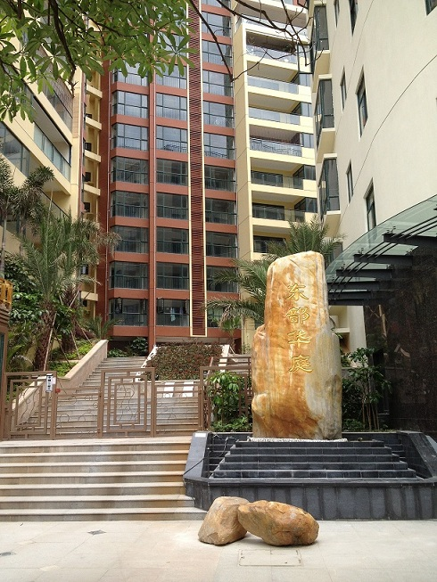

东部华侨城位于深圳大梅沙，占地近9平方公里，是国内收个集休闲度假、观光旅游、户外运动、科普教育、生态探险等主题于一体的大型综合性国家生态旅游示范区。同时，大梅沙海滨公园，拥有深圳最长的海滩，海水清澈，沙滩广阔，沙质细软。大梅沙娱乐场设有沙滩跑马、水上快艇、大型音乐灯光喷泉及露天歌舞厅、烧烤场。是一个集度假休闲、观光旅游、运动娱乐为一体的旅游胜地。

最新推出33-66㎡精装酒店式公寓，景观朝向极佳，纵览一线海景，惬意山居。置业成本较低，拎包即可入住，投资度假两相宜，未来引进品牌酒店式物管，更可实现物业返租托管，坐收丰厚收益分成，实现升值高回报。
大梅沙东部华侨城大门东侧（上成路18号）
深盐第二通道、盐坝高速、盐排高速、大梅沙公交总站、地铁8号线近在咫尺。
楼盘共8层，24小时只能电梯，配地下2层停车场，人车分流，小区配套花园。
高级酒店：万科国际会议中心酒店、京基喜来登酒店、华侨城茵特拉根酒店、芭提雅酒店
高端餐饮：万科东海岸名厨饭堂、京基喜来登粤菜王府、华侨城丹桂轩
主题公园：东部华侨城、大梅沙海滨公园、湖心岛主题公园
游艇会：浪奇游艇会（275个泊位）、大梅沙游艇会（175个泊位）
高尔夫：东部华侨城高尔夫球场（36洞）、世纪海景高尔夫球场（18洞）
品牌商业：奥特莱斯购物村
名校优教：盐田外国语学校、深圳大学师范学院附属第二中学
医疗配套：梅沙医院、社区健康服务中心